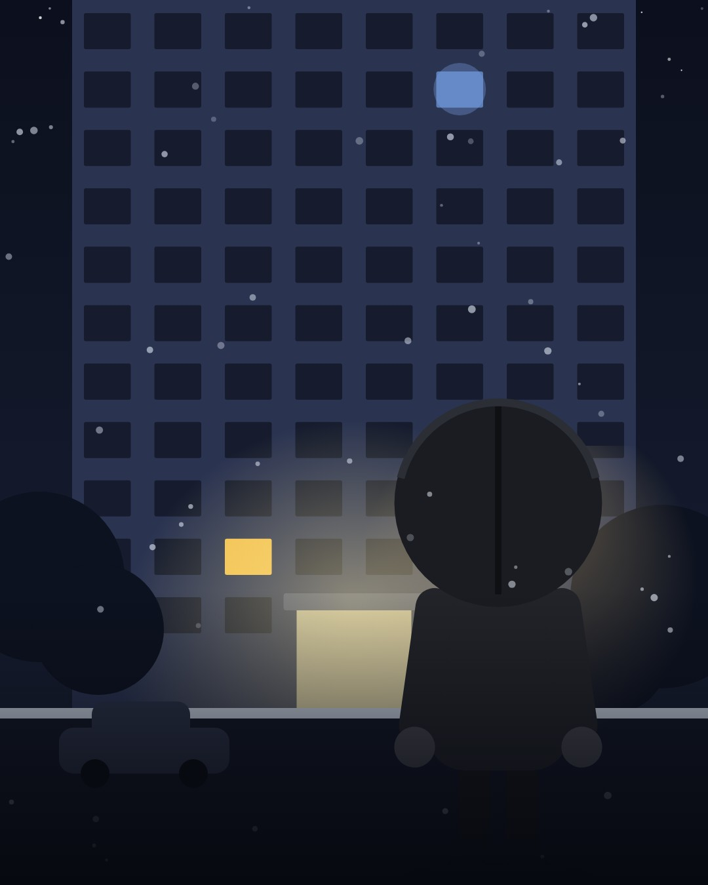
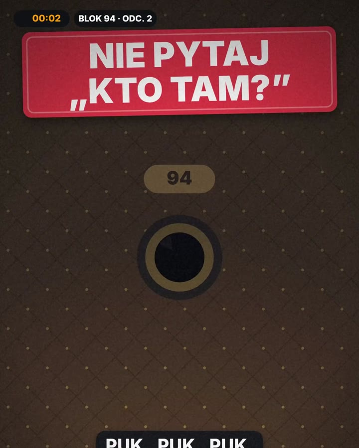
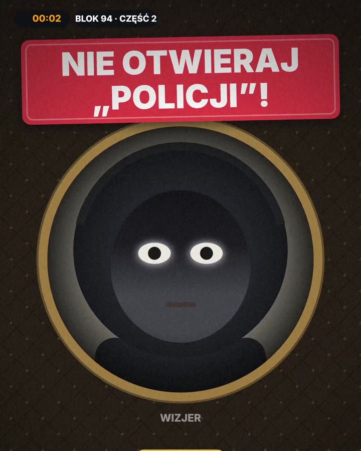
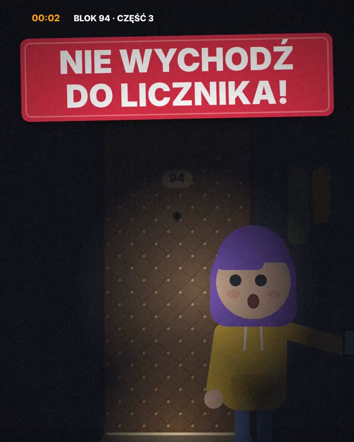
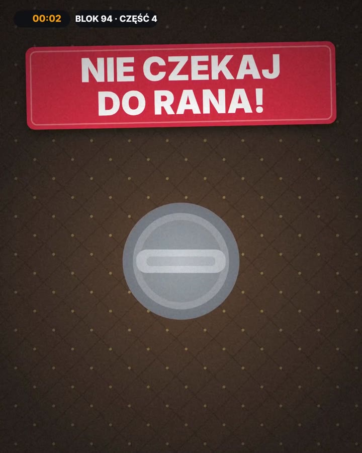
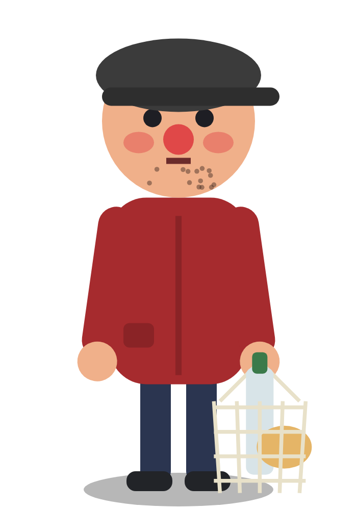
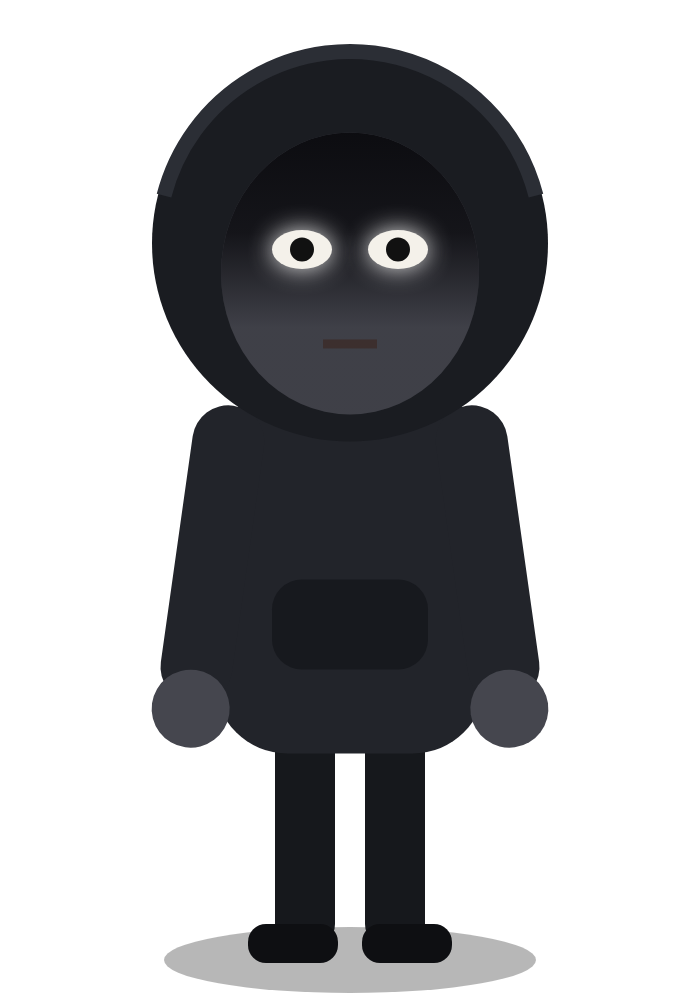

<title>Protokół Ocaleni · BLOK 94</title>
<meta name="claude:viewport-fit-sides" content="cover">
<link rel="preconnect" href="https://fonts.googleapis.com">
<link rel="stylesheet" href="https://fonts.googleapis.com/css2?family=Archivo+Black&family=Archivo:wght@400;600;800&family=JetBrains+Mono:wght@700&display=swap">
<style>
/* Układ: nocna klatka schodowa — kolejne „piętra” strony od wejścia (baner) po wyjście (stopka). Jeden, nocny wygląd. */
:root{
  color-scheme:dark;
  --night:#0a0c14; --stair:#131726; --wall:#1b2034; --ink:#f3efe6; --muted:#aeb0c2;
  --sign:#d7263d; --hat:#f39c12; --ola:#7b4fc9; --door:#5e4029; --door2:#4d3420; --gold:#c9a15a; --led:#ff3b30; --metal:#9aa1a8;
  --display:"Archivo Black","Arial Black",Impact,sans-serif; --body:"Archivo",system-ui,-apple-system,"Segoe UI",sans-serif; --mono:"JetBrains Mono",ui-monospace,"Courier New",monospace;
}
*{box-sizing:border-box}
html{background:var(--night)}
body{margin:0;background:var(--night);color:var(--ink);font-family:var(--body);font-size:17px;line-height:1.55}
a{color:inherit}
img{max-width:100%;display:block}
.wrap{max-width:1120px;margin:0 auto;padding-left:max(16px,env(safe-area-inset-left,0px));padding-right:max(16px,env(safe-area-inset-right,0px))}
h1,h2,h3{font-family:var(--display);font-weight:400;line-height:1.02;text-wrap:balance;margin:0}
h2{font-size:clamp(30px,6vw,48px)}
.eyebrow{display:inline-block;font:800 12px/1 var(--body);letter-spacing:.14em;text-transform:uppercase;color:#14161b;background:var(--hat);padding:7px 12px;border-radius:999px}
.sign{display:inline-block;background:var(--sign);color:#fff;padding:.04em .28em .1em;border-radius:.18em;transform:rotate(-1.5deg);box-shadow:0 10px 30px rgba(215,38,61,.35)}
section{padding-block:72px}
.lead{color:var(--muted);font-size:clamp(17px,2.2vw,19px);max-width:60ch}
.btn{display:inline-flex;align-items:center;justify-content:center;gap:10px;min-height:52px;padding:14px 22px;border-radius:14px;font:800 16px/1 var(--body);text-decoration:none;letter-spacing:.02em;border:0;cursor:pointer}
.btn.red{background:var(--sign);color:#fff;box-shadow:0 10px 26px rgba(215,38,61,.4)}
.btn.line{background:transparent;color:var(--ink);box-shadow:inset 0 0 0 2px rgba(243,239,230,.35)}
.btn:focus-visible,button:focus-visible,a:focus-visible{outline:3px solid var(--hat);outline-offset:3px}

/* nawigacja */
.top{position:sticky;top:env(safe-area-inset-top,0px);z-index:20;background:rgba(10,12,20,.88);backdrop-filter:blur(10px);border-bottom:1px solid rgba(255,255,255,.07)}
body::before{content:"";position:fixed;inset:0 0 auto;height:env(safe-area-inset-top,0px);z-index:21;background:var(--night)}
.top .wrap{display:flex;align-items:center;justify-content:space-between;gap:12px;padding-block:12px}
.logo{display:flex;align-items:center;gap:10px;text-decoration:none;font-family:var(--display);font-size:17px}
.logo b{background:#2f5da8;color:#fff;font:800 11px/1 var(--body);letter-spacing:.1em;padding:6px 8px;border-radius:6px}
.nav{display:flex;gap:18px;font-weight:600;font-size:15px}
.nav a{text-decoration:none;color:var(--muted)}
.nav a:hover{color:var(--ink)}
.top .btn{min-height:42px;padding:10px 14px;font-size:14px}
@media(max-width:760px){.nav{display:none}}

/* baner */
.hero{padding-block:40px 64px;background:radial-gradient(900px 500px at 70% 10%,#1d2747 0%,transparent 60%)}
.hero .wrap{display:grid;gap:32px;align-items:center}
.hero h1{font-size:clamp(54px,12vw,112px);margin:16px 0 18px}
.hero .story{font-size:clamp(18px,2.4vw,21px);max-width:44ch}
.hero .cta{display:flex;flex-wrap:wrap;gap:12px;margin-top:24px}
.hero figure{margin:0;border-radius:24px;overflow:hidden;box-shadow:0 40px 80px rgba(0,0,0,.6);position:relative;max-width:520px;justify-self:center;width:100%}
.hero figure figcaption{position:absolute;left:16px;bottom:16px;font:800 13px/1.3 var(--body);background:rgba(10,12,20,.8);padding:8px 12px;border-radius:10px}
.next{margin-top:26px;display:flex;flex-wrap:wrap;align-items:center;gap:14px;background:var(--stair);border:1px solid rgba(255,255,255,.08);border-radius:18px;padding:14px 16px;max-width:560px}
.next .lbl{font-weight:800;font-size:14px}
.next .lbl small{display:block;color:var(--muted);font-weight:600}
.cd{display:flex;gap:6px;font-family:var(--mono);font-variant-numeric:tabular-nums}
.cd span{background:#0d0f13;color:var(--led);text-shadow:0 0 12px rgba(255,59,48,.6);border-radius:8px;padding:8px 8px 6px;font-size:22px;min-width:52px;text-align:center}
.cd span i{display:block;font:600 10px/1 var(--body);color:#9a8f8f;font-style:normal;text-shadow:none;margin-top:3px}
.stats{display:flex;flex-wrap:wrap;gap:22px;margin-top:22px;color:var(--muted);font-size:15px}
.stats b{display:block;color:var(--ink);font-family:var(--display);font-size:28px}
@media(min-width:900px){.hero .wrap{grid-template-columns:1.15fr .85fr}}

/* części serii */
.parts{background:var(--stair)}
.parts .head{display:flex;flex-wrap:wrap;justify-content:space-between;align-items:end;gap:16px;margin-bottom:28px}
.grid4{display:grid;grid-template-columns:repeat(auto-fit,minmax(240px,1fr));gap:18px}
.part{background:var(--wall);border-radius:18px;overflow:hidden;display:flex;flex-direction:column;min-width:0}
.part img{aspect-ratio:4/5;object-fit:cover;width:100%}
.part .in{padding:16px 16px 18px;display:flex;flex-direction:column;gap:8px;flex:1}
.part .no{font:800 12px/1 var(--body);letter-spacing:.12em;text-transform:uppercase;color:var(--hat)}
.part h3{font-size:22px}
.part p{margin:0;color:var(--muted);font-size:15px}
.part .rule{margin-top:auto;font-size:14px;font-weight:600;background:rgba(215,38,61,.12);border-left:4px solid var(--sign);padding:8px 10px;border-radius:6px}
.part a{margin-top:8px;font-weight:800;font-size:15px;color:var(--ink)}

/* bohaterowie */
.cast{display:grid;grid-template-columns:repeat(auto-fit,minmax(200px,1fr));gap:18px;margin-top:28px}
.who{background:linear-gradient(180deg,#232a44,#161a2a);border-radius:18px;padding:18px 16px;text-align:center}
.who img{height:200px;width:auto;margin:0 auto 6px;object-fit:contain}
.who h3{font-size:22px}
.who .tag{display:inline-block;font:800 11px/1 var(--body);letter-spacing:.1em;text-transform:uppercase;margin:8px 0;padding:5px 8px;border-radius:6px;color:#14161b}
.who p{margin:0;color:var(--muted);font-size:15px}

/* zasady: wizjer */
.rules{background:radial-gradient(700px 400px at 20% 0%,#2a1d14 0%,transparent 70%)}
.rlist{list-style:none;padding:0;margin:28px 0 0;display:grid;gap:12px}
.rlist li{display:grid;grid-template-columns:56px 1fr;gap:14px;align-items:center;background:var(--stair);border-radius:16px;padding:14px 16px}
.peep{width:56px;height:56px;border-radius:50%;background:#000;box-shadow:0 0 0 6px var(--gold),inset 0 0 12px rgba(255,255,255,.08)}
.rlist b{display:block;font-size:17px}
.rlist span{color:var(--muted);font-size:15px}
.n112{font-family:var(--mono);color:var(--led)}

/* quiz */
.quiz{background:var(--stair)}
.qbox{margin-top:24px;background:var(--wall);border-radius:20px;padding:20px;max-width:720px}
.qbox .q{font-weight:800;font-size:19px;margin:0 0 14px}
.qbox .opts{display:grid;gap:10px}
.qbox button{all:unset;cursor:pointer;background:#0f1220;border-radius:12px;padding:14px 16px;font-weight:600;box-shadow:inset 0 0 0 2px rgba(255,255,255,.08)}
.qbox button.ok{box-shadow:inset 0 0 0 2px #30a46c;background:#10261a}
.qbox button.bad{box-shadow:inset 0 0 0 2px var(--sign);background:#2a1016}
.qbox .why{margin:14px 0 0;color:var(--muted);min-height:24px}
.qbox .foot{display:flex;justify-content:space-between;align-items:center;margin-top:12px;font-size:14px;color:var(--muted)}

/* napiwki: panel windy */
.sup{padding-block:72px;background:radial-gradient(1200px 600px at 50% -10%,#1b2340 0%,var(--night) 60%)}
.sup .w{display:grid;gap:28px}
.tipcard{position:relative;border-radius:22px;padding:22px;overflow:hidden;max-width:520px;width:100%;justify-self:center;
 background:radial-gradient(circle,var(--gold) 2.2px,transparent 2.6px) 0 0/44px 44px,repeating-linear-gradient(45deg,transparent 0 30px,var(--door2) 30px 32px),repeating-linear-gradient(-45deg,transparent 0 30px,var(--door2) 30px 32px),var(--door);
 box-shadow:0 30px 60px rgba(0,0,0,.5),inset 0 0 0 10px #3c2a1c}
.chars{display:flex;justify-content:space-between;align-items:flex-end;margin:-6px -6px -22px;pointer-events:none}
.chars img{width:30%;max-width:150px;filter:drop-shadow(0 10px 20px rgba(0,0,0,.6))}
.chars .bubble{background:#fff;color:#14161b;font-weight:700;font-size:13px;padding:8px 12px;border-radius:14px;border:2px dashed #2a2d35;margin-bottom:120px;max-width:44%}
.panel{background:linear-gradient(180deg,#a9b1ba,#8c939c);border-radius:16px;padding:18px;box-shadow:inset 0 2px 0 rgba(255,255,255,.4),0 10px 30px rgba(0,0,0,.4)}
.plate{display:flex;justify-content:space-between;align-items:center;font:800 11px/1 var(--body);letter-spacing:.1em;color:#2b2f36;margin-bottom:10px}
.plate b{background:#2f5da8;color:#fff;padding:5px 8px;border-radius:6px}
.led{background:#0d0f13;border-radius:12px;padding:14px 16px;text-align:center;box-shadow:inset 0 0 0 3px #1c1f26}
.led .amount{font-family:var(--mono);font-weight:700;font-size:56px;color:var(--led);text-shadow:0 0 18px rgba(255,59,48,.7);font-variant-numeric:tabular-nums}
.led .buys{margin:4px 0 0;color:#ffb3ad;font-size:13px;min-height:18px}
.floors{display:grid;grid-template-columns:repeat(3,1fr);gap:14px;margin:18px 10px 8px}
.floors button{aspect-ratio:1;border-radius:50%;border:0;cursor:pointer;font:900 18px/1 var(--body);color:#2b2f36;background:radial-gradient(circle at 35% 30%,#f4f6f8,#c9cdd2 60%,#9ea4ab);box-shadow:0 4px 0 #6e757c,0 6px 14px rgba(0,0,0,.35);max-width:96px;justify-self:center;width:100%}
.floors button small{display:block;font-size:10px;font-weight:700;opacity:.7;margin-top:2px}
.floors button[aria-pressed=true]{color:#fff;background:radial-gradient(circle at 35% 30%,#ffd27a,#f39c12 60%,#c97a0a);box-shadow:0 2px 0 #8a5306,0 0 22px rgba(243,156,18,.75);transform:translateY(2px)}
.tipbtn{width:100%;margin-top:14px;font-size:18px;text-transform:uppercase}
.payic{display:flex;flex-wrap:wrap;gap:6px;justify-content:center;margin-top:14px;opacity:.85}
.payic span{background:#fff;color:#111;font:800 10px/1 var(--body);padding:5px 7px;border-radius:5px}
small.note{display:block;text-align:center;color:#e9dccb;opacity:.85;font-size:12px;margin-top:10px}
.uses{list-style:none;padding:0;margin:0;display:grid;grid-template-columns:repeat(2,1fr);gap:10px}
.uses li{background:linear-gradient(180deg,#8e959c,#767d84);border-radius:8px;padding:14px 12px 12px;color:#14161b;font-weight:800;font-size:14px;position:relative;box-shadow:inset 0 -3px 0 rgba(0,0,0,.2);min-width:0}
.uses li:before{content:"";display:block;height:6px;width:60%;background:#5c6369;border-radius:3px;margin-bottom:10px}
.uses li span{display:block;font-size:11px;font-weight:700;color:#1f2a3a;opacity:.75;margin-top:4px;text-transform:uppercase;letter-spacing:.08em}
.uses li em{position:absolute;top:8px;right:10px;font-style:normal;font-size:11px;background:#2f5da8;color:#fff;padding:2px 6px;border-radius:4px}
@media(min-width:900px){.sup .w{grid-template-columns:1fr 1fr;align-items:start}.uses{grid-column:1/-1;grid-template-columns:repeat(4,1fr)}}

/* stopka */
footer{padding-block:40px 56px;border-top:1px solid rgba(255,255,255,.07);color:var(--muted);font-size:14px}
footer .wrap{display:flex;flex-wrap:wrap;justify-content:space-between;gap:16px}
footer nav{display:flex;flex-wrap:wrap;gap:16px}
footer a{text-decoration:none}
@media (prefers-reduced-motion:no-preference){.part,.who{transition:transform .2s}.part:hover,.who:hover{transform:translateY(-4px)}}
</style>

<header class="top"><div class="wrap">
  <a class="logo" href="#start">Protokół Ocaleni <b>BLOK 94</b></a>
  <nav class="nav" aria-label="Menu"><a href="#seria">Seria</a><a href="#bohaterowie">Bohaterowie</a><a href="#zasady">Zasady</a><a href="#wesprzyj">Wesprzyj nas</a><a href="#wspolpraca">Współpraca</a></nav>
  <a class="btn red" href="https://www.tiktok.com/@protokolocaleni">Oglądaj</a>
</div></header>

<main id="start">
<section class="hero"><div class="wrap">
  <div>
    <span class="eyebrow">Nowa seria · @protokolocaleni</span>
    <h1><span class="sign">Kto tam?</span></h1>
    <p class="story">Druga czterdzieści siedem. Ola jest sama w mieszkaniu 94. Ktoś puka, a wizjer jest czarny. Animowana historia z jednego bloku i prawdziwe zasady, które mogą uratować także ciebie.</p>
    <div class="cta"><a class="btn red" href="https://www.tiktok.com/@protokolocaleni">Oglądaj na TikToku</a><a class="btn line" href="#seria">Zobacz wszystkie części</a></div>
    <div class="next" aria-label="Kolejna część">
      <div class="lbl">Nowa część<small>pon. 9.11, 1:30 · TikTok</small></div>
      <div class="cd" id="cd"><span id="cd-d">0<i>dni</i></span><span id="cd-h">00<i>godz.</i></span><span id="cd-m">00<i>min</i></span><span id="cd-s">00<i>sek.</i></span></div>
    </div>
    <div class="stats"><div><b>4</b>części serii</div><div><b>~50 tys.</b>wyświetleń części 2</div><div><b>112</b>numer, który warto pamiętać</div></div>
  </div>
  <figure><figcaption>Kasztanowa 12 · klatka II · 9. piętro</figcaption></figure>
</div></section>

<section class="parts" id="seria"><div class="wrap">
  <div class="head"><div><span class="eyebrow">Seria</span><h2 style="margin-top:12px">Oglądaj od początku</h2></div><p class="lead" style="margin:0">Każda część kończy się cliffhangerem. Zacznij od pierwszej.</p></div>
  <div class="grid4">
    <article class="part"><div class="in"><span class="no">Część 1</span><h3>Nie pytaj „kto tam?”</h3><p>Ktoś zakleił wizjer. Za drzwiami płacze kobieta, a piętro wyżej ktoś czeka.</p><div class="rule">Prośba o pomoc w nocy? Nie otwieraj, dzwoń na 112.</div><a href="https://www.tiktok.com/@protokolocaleni">Oglądaj →</a></div></article>
    <article class="part"><div class="in"><span class="no">Część 2</span><h3>Nie otwieraj „policji”!</h3><p>Ktoś wali do drzwi: „Policja!”. Prawdziwy patrol jest jeszcze cztery minuty dalej.</p><div class="rule">Zapytaj 112, czy patrol stoi pod twoimi drzwiami.</div><a href="https://www.tiktok.com/@protokolocaleni">Oglądaj →</a></div></article>
    <article class="part"><div class="in"><span class="no">Część 3</span><h3>Nie wychodź do licznika!</h3><p>O północy prąd gaśnie tylko w mieszkaniu 94. Kuba idzie włączyć korki.</p><div class="rule">Prąd zgasł tylko u ciebie? Nie wychodź na korytarz.</div><a href="https://www.tiktok.com/@protokolocaleni">Oglądaj →</a></div></article>
    <article class="part"><div class="in"><span class="no">Część 4</span><h3>Nie czekaj do rana!</h3><p>Kaptur ma klucze Kuby. O 3:12 zamek przekręca się sam.</p><div class="rule">Zgubione klucze? Zamek wymień tej samej nocy.</div><a href="https://www.tiktok.com/@protokolocaleni">Oglądaj →</a></div></article>
  </div>
</div></section>

<section id="bohaterowie"><div class="wrap">
  <span class="eyebrow">Bohaterowie</span><h2 style="margin-top:12px">Mieszkańcy bloku 94</h2>
  <div class="cast">
    <div class="who"><h3>Ola</h3><span class="tag" style="background:#b79bea">mieszkanie 94</span><p>Została sama na noc. Uczy się na błędach szybciej, niż by chciała.</p></div>
    <div class="who"><h3>Kuba</h3><span class="tag" style="background:var(--hat)">brat Oli</span><p>Gra w słuchawkach, gubi klucze i zawsze chce „zaraz to włączyć”.</p></div>
    <div class="who"><h3>Pan Zdzisiek</h3><span class="tag" style="background:#e07a7a">2. piętro</span><p>„Ja tu znam wszystkich.” I naprawdę pilnuje klatki.</p></div>
    <div class="who"><h3>Kaptur</h3><span class="tag" style="background:#c9cdd2">mieszkanie 104?</span><p>Nikt nie widział jego twarzy. Zna ten blok lepiej niż ktokolwiek.</p></div>
  </div>
</div></section>

<section class="rules" id="zasady"><div class="wrap">
  <span class="eyebrow">Z każdej części jedna zasada</span><h2 style="margin-top:12px">Zasady z bloku 94</h2>
  <ul class="rlist">
    <li><div class="peep" aria-hidden="true"></div><div><b>Ktoś puka w nocy, a wizjer jest czarny?</b><span>Nie pytaj „kto tam?”. Nie zdradzaj, że jesteś w domu. Dzwoń na <span class="n112">112</span>.</span></div></li>
    <li><div class="peep" aria-hidden="true"></div><div><b>Ktoś prosi o pomoc zza drzwi?</b><span>Nie otwieraj, nawet na łańcuch. Pomoc wezwiesz przez drzwi.</span></div></li>
    <li><div class="peep" aria-hidden="true"></div><div><b>Ktoś mówi, że jest z policji?</b><span>Zapytaj dyspozytora <span class="n112">112</span>, czy patrol jest pod twoim adresem.</span></div></li>
    <li><div class="peep" aria-hidden="true"></div><div><b>Prąd zgasł tylko u ciebie?</b><span>Nie wychodź w nocy na korytarz do licznika.</span></div></li>
    <li><div class="peep" aria-hidden="true"></div><div><b>Zgubione klucze z numerem mieszkania?</b><span>Zamek wymień tej samej nocy. Nie noś numeru na breloczku.</span></div></li>
    <li><div class="peep" aria-hidden="true"></div><div><b>Jesteś sam w domu?</b><span>Nie pisz o tym w relacji i nie dodawaj lokalizacji.</span></div></li>
  </ul>
</div></section>

<section class="quiz" id="graj"><div class="wrap">
  <span class="eyebrow">Graj</span><h2 style="margin-top:12px">Co zrobiłbyś na miejscu Oli?</h2>
  <div class="qbox" id="qbox" aria-live="polite">
    <p class="q" id="q-text"></p><div class="opts" id="q-opts"></div><p class="why" id="q-why"></p>
    <div class="foot"><span id="q-no"></span><button type="button" id="q-next" class="btn line" style="min-height:40px;padding:8px 14px" hidden>Następne pytanie</button></div>
  </div>
</div></section>

<section class="sup" id="wesprzyj"><div class="wrap w">
  <div>
    <span class="eyebrow">Klatka II · mieszkanie 94</span>
    <h2 style="margin-top:14px">Wpuść nas do <span class="sign">kolejnej części</span></h2>
    <p class="lead">Serię „Kto tam?” robimy sami: scenariusze, animację Kuby, Oli i Kaptura, lektora i dźwięk. Jeśli historia z bloku 94 trzyma cię w napięciu, zostaw napiwek, już od 2 zł. Każdy grosz wraca do kanału.</p>
  </div>
  <div class="tipcard">
    <div class="chars"><span class="bubble">„Kurier? Nie, to napiwek. Ten wpuszczamy.”</span></div>
    <div class="panel">
      <div class="plate"><span>WINDA · KLATKA II</span><b>WYBIERZ KWOTĘ</b></div>
      <div class="led"><div class="amount" id="t-amt">20 zł</div><p class="buys" id="t-buys">= jedna scena z Kapturem</p></div>
      <div class="floors" role="group" aria-label="Kwota napiwku" id="floors"></div>
      <a class="btn red tipbtn" href="#wesprzyj" id="t-btn">Daję napiwek · 20 zł</a>
      <div class="payic" aria-label="Metody płatności"><span>BLIK</span><span>Apple Pay</span><span>Google Pay</span><span>Visa</span><span>Mastercard</span><span>PayPal</span><span>Klarna</span></div>
    </div>
    <small class="note">Napiwek to dobrowolne wsparcie. Nie dostajesz produktu, tylko nasze wielkie dzięki i kolejne części.</small>
  </div>
  <ul class="uses">
    <li><em>91</em>Lektor i głosy postaci<span>każda część</span></li>
    <li><em>92</em>Animacja Kuby, Oli i Kaptura<span>każda scena</span></li>
    <li><em>93</em>Efekty i dźwięk bloku<span>każda noc</span></li>
    <li><em>94</em>Kolejne części „Kto tam?”<span>cel</span></li>
  </ul>
</div></section>
</main>

<footer id="wspolpraca"><div class="wrap">
  <div><b style="color:var(--ink)">Protokół Ocaleni</b> · animowane historie o bezpieczeństwie · @protokolocaleni</div>
  <nav aria-label="Stopka"><a href="https://www.tiktok.com/@protokolocaleni">TikTok</a><a href="#seria">Seria</a><a href="#wesprzyj">Wesprzyj nas</a><a href="#wspolpraca">Współpraca</a></nav>
</div></footer>

<script>
// odliczanie do premiery: pon. 9.11.2026, 1:30 czasu polskiego (00:30 UTC)
(function(){const T=Date.parse('2026-11-09T00:30:00Z');const p=n=>String(n).padStart(2,'0');
 const set=(id,v,l)=>{const e=document.getElementById(id);if(e)e.innerHTML=v+'<i>'+l+'</i>';};
 function tick(){let s=Math.max(0,Math.floor((T-Date.now())/1000));set('cd-d',Math.floor(s/86400),'dni');set('cd-h',p(Math.floor(s%86400/3600)),'godz.');set('cd-m',p(Math.floor(s%3600/60)),'min');set('cd-s',p(s%60),'sek.');}
 tick();setInterval(tick,1000);})();
// napiwki: przyciski windy (w sklepie sterują istniejącym suwakiem z wariantami 2–100 zł)
(function(){const A=[2,5,10,20,50,100],B={2:'= jedna linijka lektora',5:'= jeden efekt dźwiękowy',10:'= jeden dymek z głosem',20:'= jedna scena z Kapturem',50:'= cała noc w bloku 94',100:'= połowa nowej części'};
 const box=document.getElementById('floors');
 A.forEach(a=>{const b=document.createElement('button');b.type='button';b.id='kw'+a;b.innerHTML=a+'<small>zł</small>';b.setAttribute('aria-pressed',a===20?'true':'false');
  b.addEventListener('click',()=>{box.querySelectorAll('button').forEach(x=>x.setAttribute('aria-pressed','false'));b.setAttribute('aria-pressed','true');
   document.getElementById('t-amt').textContent=a+' zł';document.getElementById('t-buys').textContent=B[a];document.getElementById('t-btn').textContent='Daję napiwek · '+a+' zł';});box.appendChild(b);});
 document.getElementById('t-btn').addEventListener('click',e=>e.preventDefault());})();
// quiz
(function(){const Q=[
 {q:'2:47 w nocy. Ktoś puka, a wizjer jest czarny. Co robisz?',o:['Pytam „kto tam?”','Nie odzywam się i dzwonię na 112','Otwieram na łańcuch'],ok:1,w:'Cisza mówi, że nikogo nie ma. Pytanie zdradza, że jesteś w domu.'},
 {q:'Ktoś krzyczy zza drzwi: „Policja! Otwierać!”. Co robisz?',o:['Otwieram, to przecież policja','Pytam 112, czy patrol jest pod moim adresem','Krzyczę, żeby pokazali legitymację przez wizjer'],ok:1,w:'Dyspozytor wie, gdzie są radiowozy. Fałszywy policjant tego nie przewidzi.'},
 {q:'O północy prąd gaśnie tylko w twoim mieszkaniu. Co robisz?',o:['Idę do skrzynki na korytarzu','Zostaję w środku i dzwonię po pomoc','Wychodzę z latarką, żeby sprawdzić klatkę'],ok:1,w:'Wyłączony bezpiecznik może być pułapką na kogoś, kto wyjdzie sprawdzić.'}];
 let i=0;const qt=document.getElementById('q-text'),qo=document.getElementById('q-opts'),qw=document.getElementById('q-why'),qn=document.getElementById('q-no'),nx=document.getElementById('q-next');
 function show(){const c=Q[i];qt.textContent=c.q;qo.innerHTML='';qw.textContent='';nx.hidden=true;qn.textContent='Pytanie '+(i+1)+' z '+Q.length;
  c.o.forEach((t,k)=>{const b=document.createElement('button');b.type='button';b.textContent=t;b.addEventListener('click',()=>{qo.querySelectorAll('button').forEach((x,j)=>{x.disabled=true;if(j===c.ok)x.classList.add('ok');});if(k!==c.ok)b.classList.add('bad');qw.textContent=(k===c.ok?'Dobrze. ':'Tak zrobiła Ola i to był błąd. ')+c.w;nx.hidden=false;nx.textContent=i<Q.length-1?'Następne pytanie':'Od początku';});qo.appendChild(b);});}
 nx.addEventListener('click',()=>{i=(i+1)%Q.length;show();});show();})();
</script>
